Oggi lezioncina sul lavoro agentico, come si lavora con gli agenti, come si costruisce una piccola azienda dove la maggior parte delle tasche dei lavori vengono delegati a un agente AI. Per farlo ho portato qua con me il buon Pietro Virgilito. Ci sei Pietro? Mi senti?
Ciao Dario, ci sono, ti sento, buongiorno, ciao a tutti. Pietro, per chi non lo sapesse, lavora nella cyber security, ha lavorato col senato, altre istituzioni e sarà qua a fare quello che io non so fare, ossia spiegarvi al meglio, dal punto di vista tecnico, come utilizzare gli agenti. Io utilizzo gli agenti tutti i giorni nel mio lavoro, però ho detto, serve una persona che è più preparata di me nel rispondere alle eventuali obiezioni. Oggi, Pietro, dimmi se sbaglio, abbiamo portato con noi un piccolo esempio riguardo a quello che potrebbe essere l'inizio della struttura di un'azienda che vuole lavorare per lo più tramite agenti AI, no? Esattamente, nel senso che abbiamo pensato a come proporre un'architettura agentica di base per far comprendere che cos'è un'azienda agentica, per come idealmente può essere implementata, quali sono i componenti, quali sono i flussi. Ovviamente questo è un esempio e quindi non è un sistema di produzione vero e proprio, ma aiuta a capire come l'agentizzazione può essere intesa per le aziende.
Anche perché eravamo partiti l'altra volta nel dire che la cosa forse più importante quando si lavora con gli agenti è l'architettura delle informazioni che si va a creare, perché alla fine tutto quello che andiamo a costruire non è altro che un insieme di regole, di principi, di contenuti che andandoli a mettere assieme, mettiamo nelle condizioni gli agenti che già esistono, non è che siamo noi a costruirli, di riuscire a interpretare il ruolo che devono interpretare. Dimmi se è corretto. Assolutamente sì, nel senso che fare uno sforzo di determinare quali sono i processi aziendali, i dati aziendali, dove risiedono, come vengono manipolati e appunto quindi com'è possibile automatizzare o agentizzare porzioni aziendali è fondamentale, quindi è una fase di pre-analisi senza la quale l'agentizzazione non ha successo, non è un sistema plug and play l'agentizzazione, è un sistema che arriva dopo un'auto-analisi aziendale per capire esattamente architettura e processi.
Direi che aggiungo il tuo schermo in streaming così si vede un attimo quello su cui stiamo lavorando.
Dovete sapere che io e Pietro stiamo sviluppando un'idea di prodotto, un progetto, una start-up che si basa per lo più sul lavoro agentico, quindi in un altro video che magari vi incollo in descrizione raccontavamo come utilizzavamo più di 150 agenti per mandare in sviluppo il prodotto perché non avevamo i soldi per poterci permettere l'assunzione di 10 sviluppatori full-time e quindi gran parte del lavoro che oggi facciamo su questo prodotto viene eseguito tramite agenti AI e la prima cosa che è stata fatta da Pietro e da Frankie che sono le persone che dirigono i lavori e questi agenti è stato proprio costruire il sistema informativo che permettesse agli agenti di entrare in funzione e sviluppare il prodotto. Quello che stiamo vedendo ora è il nostro piccolo sistema informativo del caso d'azienda che abbiamo portato oggi, se vuoi raccontarci qualcosa Pietro. Sì assolutamente, un esempio che abbiamo pensato di fare era il seguente, cioè provare ad immaginare l'agentizzazione di una piccola software house, digital agency che deve produrre, deve sviluppare dei siti web per conto di clienti che gli chiedono esattamente questo,
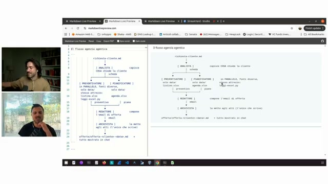
sviluppami un sito web. Siccome questa operazione, l'operazione di creazione del preventivo, di analisi, valutazione e creazione del preventivo di solito coinvolge vari attori, vari processi, dati aziendali, tempo e sforzi, abbiamo pensato appunto di provare ad agentizzarla per diciamo crearne un esempio che fosse il più chiaro possibile e far vedere come ciascuna di queste componenti di questa azienda agentica può essere creata, può essere integrata con il sistema generale e insomma come funziona un po' il tutto. Poi ovviamente nel corso di questo video affronteremo le varie obiezioni, tipo eh ma fino a quanto sono attendibili gli agenti, poi devo passare più tempo a rivedere gli errori che hanno fatto, ma come posso fidarmi eccetera eccetera. Il contesto qua di partenza qual è? Ciò che dovrebbe fare qualsiasi imprenditore o qualsiasi azienda, ossia andare ad analizzare il proprio business
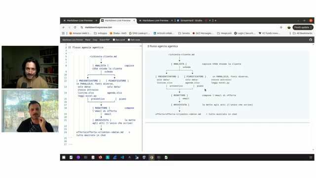
o il business che si sta andando a creare e immaginare quali saranno tutti i flussi che faranno parte del proprio business,
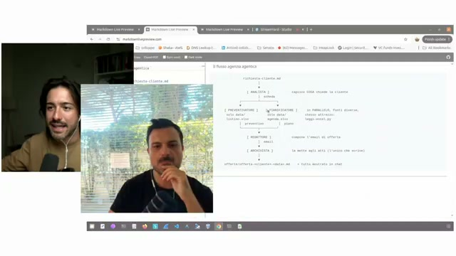
che andranno a concorrere nella costruzione del progetto imprenditoriale. Quindi se ad esempio io sono un imprenditore a capo di un'agenzia, avrò un processo che riguarda ad esempio lo sviluppo di offerte da mandare ai clienti in risposta a un preventivo, avrò magari poi il processo di costruzione del sito web, insieme a tutti gli altri processi che vanno a costruire l'insieme di tutto il lavoro che svolge un'agenzia. Oggi noi quello che stiamo vedendo è una piccola parte di questo lavoro, quindi stiamo analizzando forse il processo madre di acquisizione ai clienti,
cioè mi arriva la richiesta di gestione del cliente, arriva una richiesta da parte di un cliente che ha un'idea di sito web che vuole realizzare e io agenzia devo riuscire a consegnare ai miei agenti un processo di sviluppo di quella che è un'offerta che verrà poi inviata al cliente finale. Raccontaci un po', Pietro. Perfetto, esatto. Allora diciamo, qui non so se vedete, questo è lo schema del flusso che abbiamo immaginato. Quindi in buona sostanza abbiamo inizialmente una richiesta del cliente, che in questo caso è semplicemente un file di testo semplice semplice, in cui viene richiesto lo sviluppo di un sito web. Quindi qui ci stiamo immaginando il cliente che ci manda un'email, no? Esatto, guarda, possiamo vedere direttamente l'esempio che ho creato. Ok, immaginiamo questo messaggio.
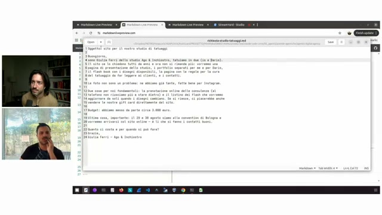
Ok, sito per il nostro studio di tatuaggi. Buongiorno, sono Giulia Ferri, dello studio Agua e d'Inchiostro. Lo tagliamo in due, bla bla bla, il sito ce lo chiedono da anni, non si rimanda più. Vorremmo una pagina di presentazione dello studio, il portfolio, eccetera eccetera. Danno informazioni aggiuntive, le foto non sono un problema, ne abbiamo già tante. Due cose fondamentali, la prenotazione online delle consulenze e il listino flash che vorremmo aggiornare da soli quando i disegni cambiano. Se si riesce, ci piacerebbe anche vendere il nostro gift card. Budget, e poi c'è anche una similazione. 3 Mila euro, dai! Onesto! Onesto! Ultima cosa importante, il 29 e il 30 agosto siamo alla convention di Bologna e vorremmo arrivarci col sito online. Allora i 3 mila euro sono pochi. I 3 mila euro sono pochi, esatto. C'è anche il surplus dedicato all'urgenza, sicuramente. Però diciamo, è una richiesta che arriva via mail o tramite un forum di contatto,
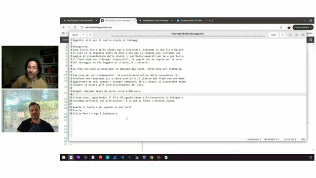
magari a valle di una campagna adb, che solitamente viene recepita da una persona, viene letta e viene gestita. Questo è l'entry point che arriva al nostro sistema agentico
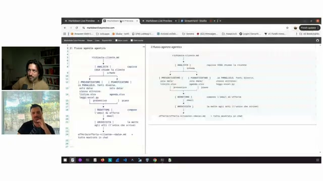
e che nel nostro sistema agentico verrà passato ad un analista. Quindi l'analista è il primo agente che qua entra in gioco? Sì, diciamo è il secondo perché c'è un agente padre, orchestratore, che li gestisce tutti. Quindi diciamo c'è l'agente padre che gestisce tutto il flusso e che come prima cosa passerà all'agente analista l'email in modo tale che l'analista estragga la richiesta. Se vogliamo andare a vedere velocemente, magari così inizio a introdurre l'architettura agentica, questo è il nostro progettino. Quindi per progetto intendi una cartella, no? Una directory, dove ci sono delle sottodirectory. In questo caso adesso vediamo data, offerte, script e la directory .Cloud dove è contenuto tutto il codice necessario a far girare il nostro agente
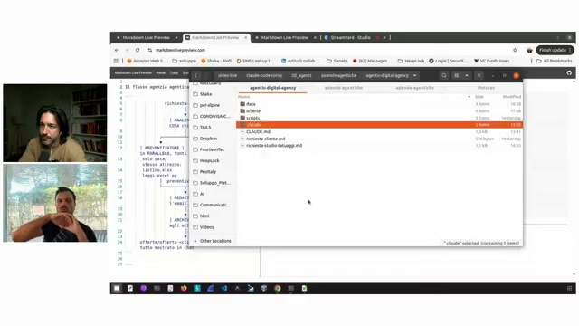
e come dicevo prima l'architettura agentica di base di questo sistema prevede l'analista che analizza la richiesta del cliente ed estrae una semantica standard di quello che è stato chiesto e questa semantica standard viene normalizzata, cioè vuol dire che viene resa leggibile in maniera schematica da chi? Da altri due agenti che sono il preventivatore e il pianificatore. Il preventivatore è quell'agente che si occupa di prendere la richiesta che arriva dall'analista e di capire rispetto al listino aziendale, che quindi sono dei dati aziendali, quanto questo servizio prodotto costerà e si occupa di ritornare i dati di costo all'agente padre. Mentre il pianificatore, che riceve in input la stessa informazione,
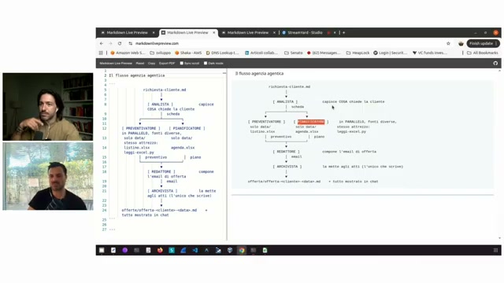
quindi la semantica della richiesta del cliente, verifica la disponibilità di lavoro da parte dell'agenzia quindi legge l'agenda dell'agenzia, che in questo caso è un file Excel, ma può essere qualsiasi cosa, verifica le tempistiche di sviluppo, verifica gli impegni dell'agenzia nelle prossime settimane e mesi e riesce a calcolare la disponibilità dell'agenzia, quindi le tempistiche per rilasciare esattamente quel prodotto. Dopo che preventivatore e pianificatore, in base a ciò che gli è stato passato dall'analista, riportano all'agente orchestratore principale i loro risultati, l'orchestratore principale ha tutte le informazioni per dire al redattore benissimo, so quanto costerà, so entro quando lo potremo fare, scrivi l'email, genera l'email corretta, perché anche qui, attenzione, il redattore ha delle indicazioni specifiche
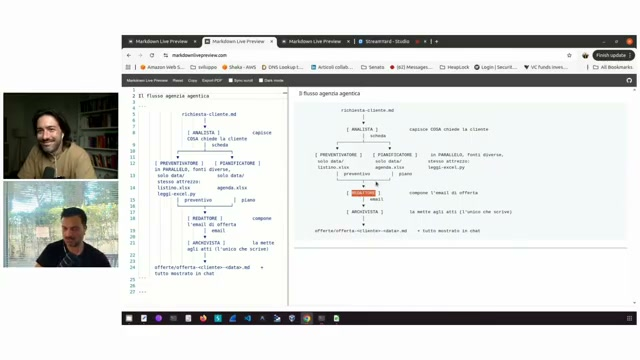
su come scrivere la mail, e formatta esattamente come vogliamo noi. Quando è finito, la passiamo all'archivista, l'archivista si occuperà semplicemente di salvarla in una determinata sottodirectory. Ovviamente, in una fase più avanzata, con un'architettura complessa di produzione, l'archivista può addirittura inviarla direttamente, inviare un messaggio WhatsApp, insomma, realmente agire e farla arrivare direttamente al cliente finale. Io vorrei che le persone capissero, chi ci sta guardando, è che molti di voi già utilizzano Cloud Code, Cloud Work, e già hanno automazioni o delle skill che girano, che fanno gran parte di queste cose, che mandano email per conto nostro. Ciò che fa veramente la differenza qua è capire, però, come si va a costruire un tipo di struttura ben fatta, che ti consenta di lavorare bene a livello agentico,
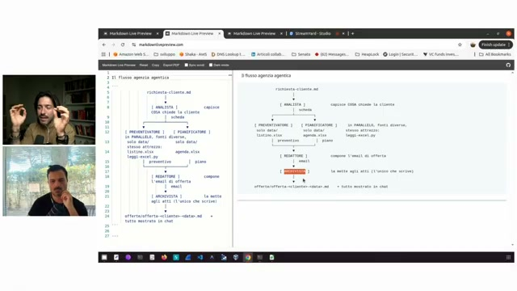
e di avere un set di regole, una struttura che ti consenta di dargli input, portare a casa degli output, quanto più puliti possibile. Da imprenditore, quello che io noto, Pietro, è, prima di tutto, mappare tutti i processi aziendali, come dicevamo prima, è la base. Perché una volta che tu hai i processi aziendali mappati, passi alla fase 2 da imprenditore, cioè assumo delle persone che si possono occupare di quei processi. Cioè, io una volta che ho i compiti da dare, mi devo chiedere chi è che può fare quel compito. Quindi, a livello imprenditoriale, ci sono due cose da fare. Numero uno, definire i compiti al meglio che posso. Cioè, tradurre in procedura scritta come deve essere fatta una cosa, al meglio di ciò che posso scrivere, e al livello massimo di comprensione e chiarezza che posso portare alla persona che poi assumerò. E il secondo passaggio è chiedermi chi devo assumere, che in questo caso sono degli agenti, e quindi chi sono queste figure, come devono lavorare, e descrivere al meglio la persona, la personalità e la competenza che deve avere questo ruolo,
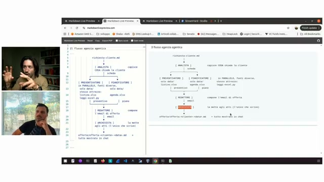
per riuscire a fare al meglio il processo che gli sto delegando. Dimmi se è tutto corretto. Perfetto. L'unica cosa che aggiungerei è perché fare tutto questo, invece che dare tutte le istruzioni e tutti i dati in un unico prompt, in un'unica richiesta, o in un'unica stanza, alla gente? Perché le AI? Perché le AI hanno dei limiti di contesto. Quindi diciamo che gestiscono un contesto di informazioni ampio, però più lo riempi e più queste informazioni non sono omogenee, più la probabilità di produrre risultati sbagliati è alta, è altissima. Quindi, per esempio, un uso errato, per esempio anche di chat GPT o di Cloud Code, che vedo, che ho visto spesso fare, è quello di prontare all'interno di questi agenti, di questi chatbot, richieste massive. Soprattutto richieste addirittura che richiedevano di fare delle computazioni. Ecco, i language model, in generale, non sono bravi a computare dati, ok?
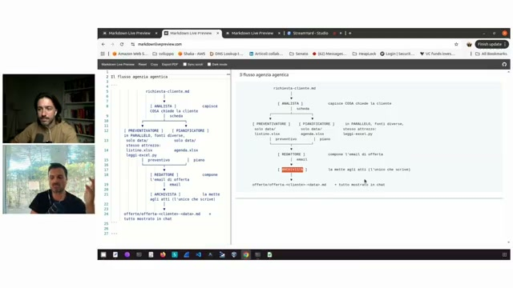
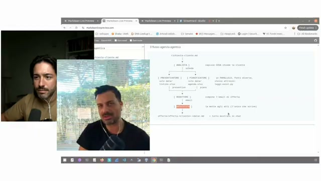
Quindi, per esempio, la computazione dei dati, il calcolo dei dati, è bene che venga fatto da un agente, o ancora meglio da uno script che la gente invoca, e quindi vengano, diciamo, sottratte da questo prompt generico che rischia soltanto di far fare confusione all'intelligenza artificiale. Guarda, io ho un esempio classico, cioè lo step 1 è riempire la chat con un prompt gigante, e ci scrivi tutto quello che vuoi, ti tieni il prompt, lo copi in collo ogni volta, e lì sei proprio alla base della comprensione di quello che stai facendo. Però, se il prompt è semplice, se la cosa che devi fare è semplice, la gente riesce a farlo. Il secondo step è costruire il classico progettino personalizzato dentro Cloud, Web o chat GPT, e aggiungere quante più informazioni possibili dentro il progetto. Ed io mi sono reso conto che funziona fino a un certo punto, cioè nel senso, se le cose non sono troppo complesse, se non aggiungi troppa roba nel contesto, perché quando tu inizi a mettere quanti più documenti,
con quante più informazioni, con quante più procedure dentro un progetto, quanto più quel progetto diventa inefficiente, inefficace, e addirittura ne viene deturbata la qualità. Non so se sei corretto. Invece in questo caso è come se noi stessimo andando a costruire una gerarchia informativa da consegnare a Cloud Code, in modo che Cloud Code possa in qualche modo lanciare diversi agenti e far sì che ogni agente abbia dei compiti ben specifici, ben delimitati, Un perimetro ben chiaro in cui lavorare. Perfetto, ma le due parole che hai detto sono perfette. Inefficiente e inefficace. Quindi più efficace risultato migliore, più efficiente meno costo lavorativo. Ok. Quindi il momento in cui... È come se tu immagina se avessi
un'azienda dove hai tre, quattro reparti diversi e decidessi di fare una riunione con tutti insieme, dall'ingegnere dicendo tutto a tutti. Ovviamente c'è confusione totale. Se invece tu pensi di dare delle istruzioni a un gruppo di lavoro, poi magari collegarle, sicuramente ha un risultato migliore perché gli agenti, i lavoratori hanno più chiaro che cosa devono fare. E' molto importante in ambito imprenditoriale, una delle cose di cui si parla spesso, il concetto di accountability. Cioè se tu vuoi che le cose vengano fatte non solo devi descrivere come devono essere fatte, ma deve essere anche ben chiaro chi le deve fare. E quando ti trovi in un contesto di caos e metti dentro tutto l'insieme di robe che vuoi che vengano fatte, solitamente accade che nessuno si prende in pancia il ruolo che magari non è chiaro e non è nemmeno ben assegnato. Invece quando il ruolo, il processo è chiaro e ben assegnato
diventa ben più facile lavorarci. Ricondivido lo schermo. Sì, sì. Assolutamente questa
è un'altra delle qualità degli agenti, cioè quella di definire il dominio dell'agente. Quindi non soltanto in maniera precisa quello che devi fare, come lo devi fare, ma tutto quello di cui tu non ti devi occupare, ok? Che è un'informazione altrettanto importante per non sporcare il lavoro degli altri e per far mantenere il focus su quello che è l'obiettivo di un singolo lavoratore e di una singola persona. Quindi così come i nostri dipendenti, i nostri collaboratori dare informazioni precise, delimitate, chiare e importante, allo stesso modo va fatto con gli agenti ed è un po' la logica che sta dietro tutto. Procediamo. Procediamo. Allora più o meno lo schema l'abbiamo visto. Adesso magari brevissimamente vi descrivo la struttura di directory, ok? Qui siamo dentro il progetto Agentic Digital Agency. Io ragazzi farò la parte di quello stupido che fa le domande stupide in modo che tutti possano capire perché anch'io sono partito da zero quindi mi sono posto queste domande. Quindi quando lavoriamo con Cloud Code o con gli agenti solitamente si
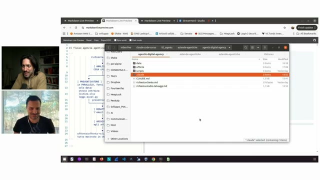
lavora con delle cartelle che contengono al loro interno file e altre cartelle. Sì, diciamo che tendenzialmente possiamo considerare la directory di progetto all'interno della quale mettiamo tutte quelle istruzioni che servono per l'esecuzione agentica di quel singolo progetto. Quindi partiamo da una directory sorgente all'interno della quale troviamo il codice che gestisce un tutto. La nostra directory sorgente si chiama Agentic Digital Agency che contiene, per gli amici scemi come me, direttori insomma vuol dire cartella. Una cartella, esatto, sì sì sì, una cartella, una cartella, perfettamente, che contiene sostanzialmente cos'altro, nulla di particolare, altre cartelle, altre sottocartelle o altri file. Alla fine tutto è una directory, tutto è tutto un file, non c'è nulla di magico. Quindi vedete che già abbiamo iniziato a organizzare i contenuti, ok? Quindi abbiamo deciso di fare una cartella directory che si chiama Data dove ho deciso di
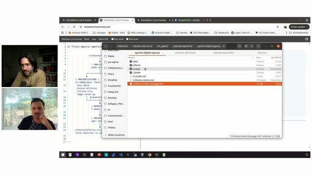
mettere dentro i dati dell'azienda. Quindi per esempio abbiamo creato due file Excel, un listino dove sono contenuti i prezzi dell'agenzia e l'agenda con il calendario di disponibilità dell'agenda. Adesso dovrei aver aperto qua il file Agenda, il file Excel Agenda, per esempio qui vedrete che ci sono due fogli, impegni e tempi standard, quindi in questo Excel abbiamo assegnato per esempio le tempistiche standard di un sito vetrina, di un modulo prenotazione, di un menu digitale e gli impegni dell'azienda. Dal 1 al 17 luglio c'è un progetto in corso su cui stiamo lavorando, poi c'è un periodo libero, ci sono delle ferie eccetera eccetera. Ovviamente questi sono file Excel, ad esempio al posto di questi file Excel tendenzialmente connetterete, poi magari vi faremo vedere in un altro video come, i vostri Google Calenda, i vostri Database, i vostri
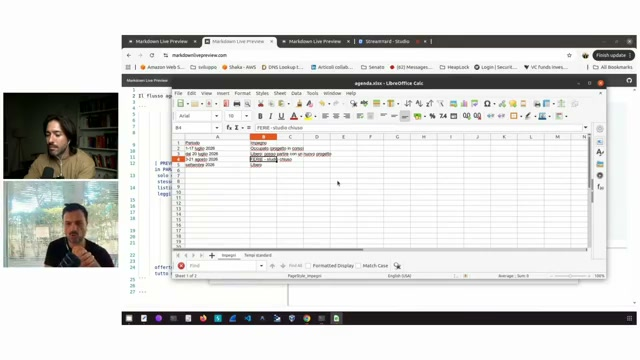
software che contengono tutte le informazioni aziendali, ok? Non necessariamente deve essere un file Excel, in questo caso è solo per semplicità. Quindi Directory Data contiene i dati aziendali, quello di cui parlava prima Dario. Queste sono informazioni che la gente non ha, ok? Devono essere sempre a disposizione e devono essere sempre leggibili, ok? E non devono essere buttate nel contesto, nel prompt a caso, ogni qual volta che si parla alla gente, ma solo nel momento in cui la gente deve effettivamente verificare i prezzi o le disponibilità. Perfetto. Il file script, questa è una cosa interessante, perché qui si diciamo affrontiamo il tema probabilismo contro determinismo, nel senso che gli agenti vengono lasciati scegliere in autonomia, proprio grazie alla loro intelligenza, in determinati contesti, ok? Ma ci sono delle operazioni che è meglio che
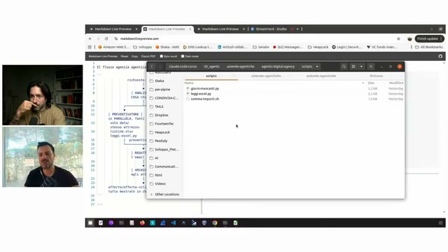
vengano fatte in maniera sicura e deterministica. Quindi, per esempio, qui abbiamo tre script che sono come tre strumenti nella cassetta degli attrezzi del nostro agente, che io ho preparato, che gli servono a fare delle cose semplici, chiare e su cui non può sbagliare. Per esempio, questo è un file python che semplicemente calcola i giorni mancanti da una data all'altra. Prima di parlare di questo file, mi spieghi meglio la differenza tra probabilistico e deterministico e perché qua non chiediamo direttamente alle AI di fare queste cose invece che fare uno script che le faccia? Allora, un'operazione probabilistica è un'operazione detta così, dato un input, l'output viene generato in base con una certa probabilità, ok? Quindi tu sai qual è l'output che verrà generato con una determinata probabilità, quindi tu dici che nel 95% dei casi l'output potrebbe stare all'interno di un range di risultati, ma non sai esattamente quale sarà il
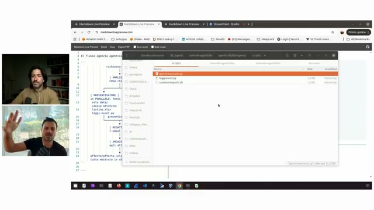
risultato, ok? E questo è molto potente nei contesti di ragionamento, ok? Quando noi vogliamo far ragionare il language model rispetto, o magari quando vogliamo anche far usare della creatività al language model, quando vogliamo farvi leggere del testo, ok? Quindi questo approccio è potente in questi casi specifici, ma quando dobbiamo fare delle operazioni semplici di cui sappiamo il risultato atteso, per esempio le operazioni matematiche come la sottrazione, la moltiplicazione, la divisione, su un grosso insieme di dati, ok? È molto meglio scrivere un programma che deterministicamente riesca a calcolare in maniera corretta, sempre corretta, quindi non nel 95% dei casi, ma nel 100% dei casi, calcoli esattamente, per esempio, la somma degli importi del preventivo,
ok? Quindi diciamo che il lavoro probabilistico è bello perché permette alla gente di spaziare nel mondo della creatività, quindi noi gli chiediamo scrivi questo copy, o scrivimi una storia in cui c'è un personaggio che fa questo, questo, quell'altro, e allora lì si entra nel reame del probabilistico. Quando invece entro nel reame del deterministico è questa cosa si fa così, punto e basta, non uscire dal perimetro di istruzioni che ti do. Perfetto, per esempio, vedi il file somma importi, ok? Questa somma deve essere perfetta e precisa. Se io in gpt o in cloud web dico quanto fa, dimmi quanto fa 5 più 5, chiaro che non sbaglia, ma nel momento in cui ci sono calcoli fatti su 10.000-100.000 Dati, in cui bisogna fare somme, sottrazioni e altre altre operazioni aritmetiche complesse, è molto probabile che il language model crei dei dati sbagliati, ok? Quindi non è il modo di utilizzare il language model. In quel caso lì, che cosa bisogna dire
semplicemente al language model? Perché i language model appartengono di più al mondo delle parole rispetto a quello che i numeri. Perfetto, ok. Quindi qua gli stai dicendo, quando invece devi usare i numeri, non usare la creatività, affidati invece a quello che ti ho scritto in questo script. Esatto, fidati di quello che ti ho scritto in questo script che funziona, sappi che cosa è interessante, questa è una questione tecnica perché è lupo agentico, quello che diciamo il language model, gli diciamo che esiste questo script, ok? Gli diciamo a che cosa serve, gli diciamo come utilizzarlo e di leggere il risultato. Quindi è l'intelligenza artificiale che viene diciamo istruita da noi sull'utilizzare questo script, quindi nel momento in cui lui deve fare un calcolo, sa che utilizza quello, gli passa in input i dati, legge l'output e continua nella sua esecuzione agentica, quindi passando da un contesto probabilistico a un contesto deterministico per
ritornare al contesto probabilistico, ok? Ok, benissimo, mi è chiaro. Ti faccio una domanda però, perché qua noi ci troviamo davanti a degli script in Python che per quanto siano semplici, immagino perché non faranno cose straordinarie, però sono pur sempre degli script. Ora, se una persona non sa sviluppare ad oggi, in che misura può chiedere, cioè ha senso chiedere alla gente, quindi all'intelligenza artificiale, di sviluppare uno script che faccia quella cosa e poi di volta in volta riutilizzare lo script? Cioè capisco che è fallace perché tu stai chiedendo alle AI di sviluppare qualcosa che non permetta margini di errori e vuoi usare quello script proprio perché è le AI che poi sviluppa la margine dell'errore, ma comunque è pur sempre meglio rispetto ad affidarsi unicamente al language model? Sì, è meglio, è possibile farlo anche per chi non programma. Ci sono delle best practice o dei consigli che
darei. Innanzitutto il principio di atomizzazione, cioè cercare di fare script che non fanno cose iper complesse, ma quindi se per esempio ci sono delle procedure aritmetiche che possono essere frazionate all'interno di tre o quattro script, crearne tre o quattro, non creare un mega script che faccia tutto. Quindi una volta che l'operazione è atomica, quindi è più piccola, è molto più semplice per il language model non sbagliare nello sviluppo dello script. Io ti dico che secondo me al giorno d'oggi, almeno per quella che è la mia esperienza, nello sviluppo di script di tre o quattrocento righe tranquillissimamente quasi sempre non sbaglia, a meno che non siano script che fanno cose eccessivamente complesse. Quindi consiglio di… Ti faccio una domanda. Io prendo l'operazione che devo fare, deterministica, la destrutturo nei suoi processi più elementari e per ogni processo crea uno script che vada a svolgere
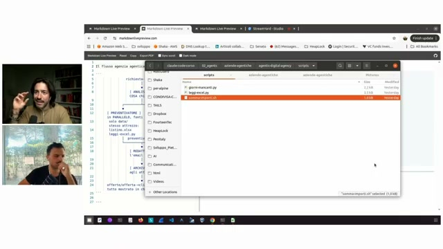
quello specifico compito e quindi in sequenza la gente utilizzerà prima uno script, poi un altro script e poi l'altro script ancora. Esatto, e anche quando il language model te li produce, è molto più facile che li produca corretti, perché anche lì ha un compito più ridotto e quindi riesce a essere molto più focalizzato sull'obiettivo e tendenzialmente sbaglia di meno. Per quel che ti posso dire io, oramai tutti gli script, sia Python, Bash, ma anche in altri linguaggi di due o trecento righe, li faccio scrivere sempre e solo ed esclusivamente language model. Un consiglio che posso dare è magari scriverlo con, per esempio, CGPT e chiedere a Cloud di valutarlo, quindi dire questo script funziona realmente, ha dei bug, ha delle problematiche di sicurezza, quindi chiedere a language model di valutarne la qualità. Di solito dopo due o tre cicli di
questo tipo le cose vanno bene e diciamo è tutto abbastanza, ci si può fidare quasi ciecamente. Chiaramente io me li riguardo sempre perché capisco che cosa c'è dentro. Chi non sa programmare sicuramente deve passare tramite un ciclo di verifica da language model a un altro, per dire controllami che questo script faccia esattamente quello che vuoi. Quindi prendo quello che ho fatto con un modello, lo passo all'altro modello e gli metto in discussione questa cosa. Esatto, trovami i bug, trovami le problematiche di sicurezza oppure funziona tutto e questo secondo me è forte e funziona. Quindi diciamo eravamo rimasti a questa directory che contiene gli script, quindi questa è la somma degli importi per fare il preventivo. Leggi Excel è uno strumento che diamo al language model per aprire e fare Excel e leggere quello che c'è dentro e giorni mancanti semplicemente è un calcolatore di calendario, quanti giorni mancano da qui al 30 settembre.
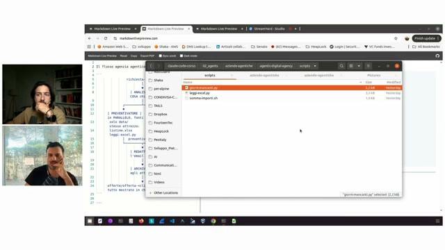
Poi cosa c'è? I dati li abbiamo visti, gli script li abbiamo visti, c'è il file cloud.Md, c'è la directory.Cloud. Questo file, questa cartella, i loro nomi non sono scelti a caso, ma sono obbligati perché in questo caso noi stiamo utilizzando cloud code come agente orchestratore e quindi dobbiamo rispettare le regole di cloud code per implementare un servizio agentico all'interno di cloud code. Io ti faccio le domande da mega beginner, se io non sapessi nulla, a che cosa serve il file cloud.Md, perché lo devo creare e soprattutto che cosa sono i file .Md? I file .Md sono tecnicamente chiamati markdown e diciamo sono dei file che hanno una determinata sintassi, se lo apro lo possiamo vedere, per esempio...
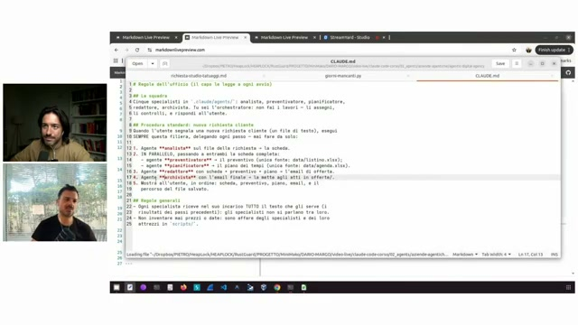
In realtà sono, magari aggiungo anche io due o tre cose, sono dei semplici file di testo, solo che chi viene dal mondo della SEO queste cose le conosce benissimo, perché ad esempio quando dovevi scrivere per gli articoli di blog un hashtag equivaleva a un h1, quindi era un header, quindi un titolo molto grande, poi c'era l'h2 con due hashtag che era il sottotitolo un po' più importante, l'h3 e poi le linee che magari sono i bullet point. In realtà è un semplice file di testo, se uno lo guarda dice madonna sembra codice, ma non è codice, dove ci sono due asterischi significa grassetto e quant'altro. Sì esatto. È un file di testo che ha delle convenzioni tali per cui se mettiamo dei caratteri particolari prima di una stringa di testo, se questa stringa equivale al titolo, al sottotitolo, al commento, all'elenco... Io per assicurare alle persone dico sempre alla fine se uno utilizza Cloud Code o l'intelligenza
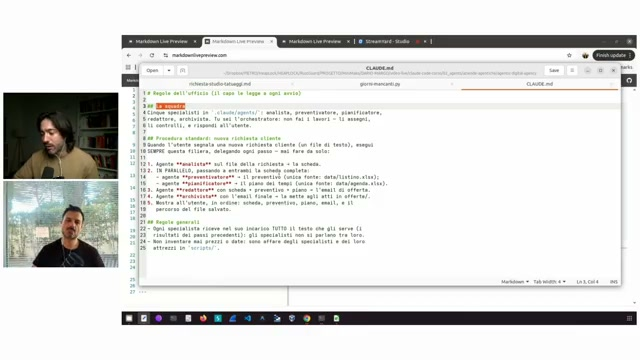
artificiale, spesso e volentieri è la stessa intelligenza artificiale che scrive e crea questi file. Non è che io mi metto mai lì e mi metto a scrivere in Markdown i file stessi che mi servono per descrivere le procedure e quant'altro. Quindi adesso da mega pigro io una cosa che faccio è utilizzare un'estensione del computer, un'app del computer che si chiama Super Whisper, ma ce ne sono tante, c'è Whisper Flow e quant'altro dove puoi parlare con il software che utilizzi per utilizzare Cloud Code. Io ad esempio uso VSCode e da VSCode parlo alla chat con Cloud Code e gli dico devo sviluppare un file in cui andiamo a spiegare questo, questo, quest'altro, quest'altro cosa qua, la facciamo in questo modo eccetera e lui mi va poi a scrivere tutto il file e le procedure. Che è esattamente quello che ho fatto anch'io, nel senso che qui di quello che vedete io non ho scritto pochissime righe, nel senso ho dato sempre a Cloud Code l'incarico di compilarmi questi file e io stesso per esempio non ricordo a memoria minimamente la sintassi
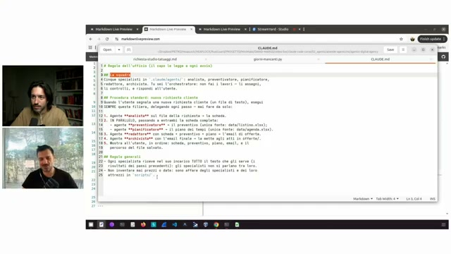
dei file MD, quindi ogni volta me la rivedo, quindi esattamente non è necessario ricordarsi la memoria. Però perché è importante questo file? Perché questo file cloud.Md è un file che Cloud Code carica ad ogni turno di dialogo in maniera obbligatoria, quindi contiene delle informazioni che vengono sempre messe a disposizione del language model quando noi utilizziamo Cloud Code. Quindi qui dentro ci sono quelle informazioni che sono importanti e che devono sempre essere obbligatoriamente prese in considerazione dall'agente ogni qual volta che noi lo eseguiamo. Ok, quindi per l'agente in questo caso intendo tutto Cloud Code. Quindi ad esempio quando Cloud Code deve lavorare in un progetto, dentro la cartella di quel progetto c'è un file cloud.Md che è il file madre dove viene descritto tutto il progetto, le componenti,
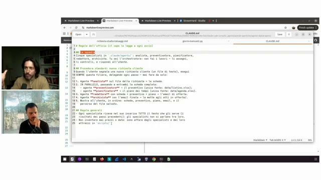
cosa c'è dentro la cartella e quelle che sono le regole principali, più importanti in assoluto che Cloud Code deve interpretare nel momento in cui lavorerà all'interno di quella cartella, è corretto? Capito bene? Correttissimo, diciamo magari detto più tecnicamente il contenuto di
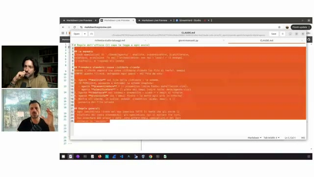
questo è sempre nel contesto argentico, sempre. Quindi ad ogni turno di dialogo comunque questo contenuto viene passato e ce l'ha sempre in memoria perché ci sono altri file che è esattamente quello che dicevamo prima, per esempio dei dati, il calendario, il listino, che non devono essere passati in continuazione. Quelli verranno utilizzati solo nel momento in cui servono. Per spiegare quello che dicevamo prima, aggiungo che spesso e volentieri abbiamo detto che aggiungere
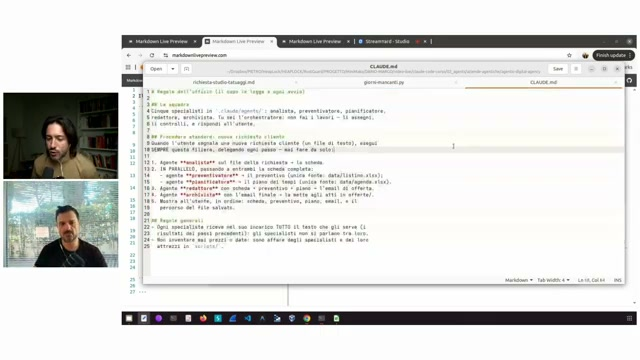
troppe informazioni depreca, diminuisce la qualità dell'output e del lavoro argentico, quindi cloud.Md come diceva Pietro è sempre caricato nella memoria, è l'identità dell'agente, del macroagente orchestratore, è sempre caricato nella memoria qualunque cosa faccia. Quindi in qualunque momento tu scrivi a qualsiasi cosa queste sono le informazioni che il nostro agente ha sempre con sé. Invece quello che noi riportiamo in altri documenti, in altri contesti, in altre sottocartelle, sono invece documenti, testi, informazioni che vengono utilizzati solamente se noi abbiamo definito nel comportamento dell'agente le modalità, i momenti e le indicazioni secondo cui l'agente deve utilizzare quelle informazioni, per non sovraccaricarlo. Quindi se ad esempio l'informazione che riguarda la data in cui sono libero per erogare il lavoro verrà utilizzata con informazioni caricate in memoria solamente nel momento in cui l'agente,
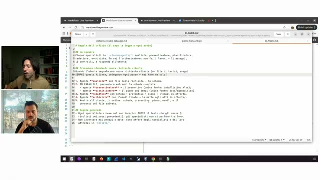
di cui ora non ricordo il nome che stiamo costruendo, dovrà andare a creare il piano d'azione e decidere entro quali date noi andremo a sviluppare il progetto. Esatto, e quindi vediamo che in questo cloudmd che è il file centrale, che diciamo è quello che determina l'agente padre orchestratore, descriviamo esattamente questo, cioè che cosa deve fare questo orchestratore. Quindi gli dice guarda che tu hai una regola dell'ufficio, quindi diciamo queste sono le regole del capo ufficio, e gli si dice guarda tu hai cinque specialisti, l'analista, il preventivatore, il pianificatore, il redattore, tu sei l'orchestratore, ok? E questa è una cosa che lui deve sempre tenere in mente, non fai i lavori, li assegni, ok? Quindi si sottolinea questo suo ruolo, e poi vengono per esempio descritti quali sono gli agenti, no? Praticamente
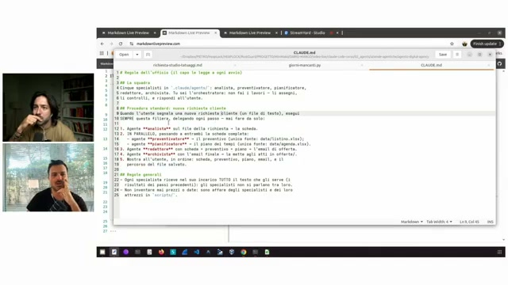
a cui assegnare il lavoro. Quando l'utente segnala una nuova richiesta del cliente, ok, triggera, fai partire tutta la tua crew di agenti, no? C'è l'analista, e attenzione qua dà anche un ordine, questo è importante, ok? Quindi dice guarda che hai un agente iniziale che è l'analista che deve essere chiamato per primo, perché deve leggere la richiesta degli utenti. Spesso i clienti non scrivono delle istanze totalmente chiare, e spesso perdiamo anche tanto tempo nel capire esattamente che cosa ci viene chiesto, perché adesso sembra un ruolo banale, ma pensate a un sottogente che sia veramente in grado di schematizzare in tre secondi la richiesta di un cliente che vi ha mandato tre mail, quattro telefonate, cinque whatsapp, e non ci avete più capito nulla di quello che vuole, ok? Immaginate questo subagente molto sviluppato che ha accesso a tutte queste informazioni e crea una istanza molto precisa rispetto a quello che vuole l'utente,
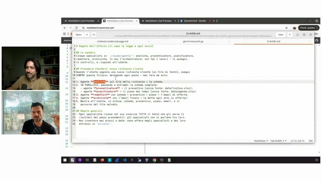
magari anche sapendo lo storico di quello stesso utente, quindi diventa un ruolo interessante. Quindi prima fase, analisi di quello che ci viene richiesto dal cliente, poi in parallelo, qui è sottolineato perché questa fase qui, quella in cui si fa lavorare il preventivatore e il pianificatore, è una fase in cui questi due lavoratori hanno due task completamente separate, che non c'entrano l'una con l'altra, che sono entrambi importanti per portare avanti il lavoro, quindi io come gestore dell'azienda gli dico lavorate insieme, andate avanti, ok? Sì, non è che uno deve aspettare che l'altro abbia finito per partire, potete lavorare insieme, cioè in contemporanea più che insieme. Esatto, cosa invece che deve fare il redattore? Il redattore deve aspettare che preventivatore e pianificatore abbiano finito e gli diano il costo di quello che è stato chiesto e le tempistiche. Quando il redattore ha in pancia queste informazioni passate dagli agenti che
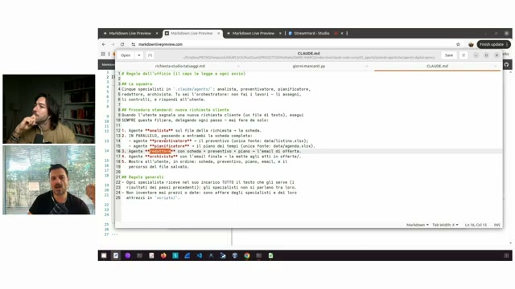
hanno lavorato in parallelo e gli hanno passate, può andare avanti, lui nel frattempo attende. Quando arrivano queste informazioni lui crea una scheda preventivo più piano, cioè tutte quelle informazioni che servono poi per essere inviate come email al cliente e dirgli ok, questa è la nostra risposta, questa è la nostra proposta, accettala. L'agente archivista qui non fa null'altro che prendere le informazioni, la mail di risposta che ha creato il redattore e salvarla in un file. Anche qui può sembrare un overkill in questo caso, ma pensate che questo può essere salvato in un database, può essere inviata una mail, può essere inviato un messaggio via whatsapp, via telegram, quindi l'archivista può fare mille cose, può loggare tutte le operazioni che sono state fatte, può avvisare il direttore dell'azienda, guarda che il preventivo è stato inviato. Quindi tutti questi sottogenti in realtà poi possono essere espansi e addirittura avere
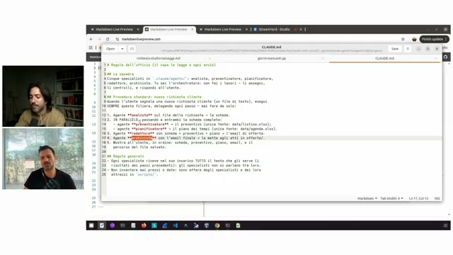
anch'essi dei sottogenti che fanno ulteriori operazioni fino ad arrivare a un livello di complessità e di capillarità in grado da mappare ed eseguire le operazioni anche di aziende con workflow estremamente complessi. Ultimo step mostra risultato all'utente. Regole generali, questo è interessante, ogni specialista quindi ogni sottogente riceve nel suo incarico tutto il testo che gli serve. Gli specialisti non si parlano tra di loro, quindi isolamento del contatto. Cosa vuol dire ogni specialista riceve nel suo incarico tutto il testo che gli serve? Gli dice attento che quando uno dei subagenti ti ritorna il risultato, quel risultato passalo in maniera completa al prossimo agente, non fare due valutazioni, devi solo fare da passacarte, non fare summary, non accorciare, non aggiungere nulla. E perché gli specialisti non si parlano
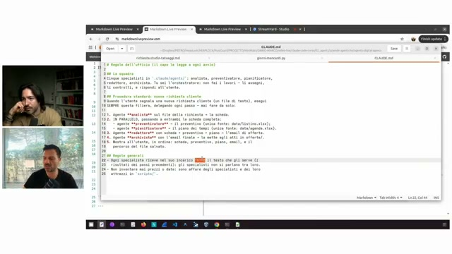
tra loro? Gli specialisti non si parlano tra loro per decisione, nel senso che quando tu hai decisione in questo contesto, nel senso che se tu vuoi che gli agenti siano sia in serie e parallelo, abbiano delle task isolate, è necessario che non si parlino tra loro. Questa è la prima fase e diciamo è il primo modello, è del modello base di implementazione agentica. Ci sono dei design pattern che prevedono il dialogo interagentico, però quelle magari le vediamo anche più avanti, anche perché per esempio Cloud Code la implementa con un design pattern che si chiama Agent Teams, però siccome è in beta, se non ricordo male, proprio perché ancora non è solido e fa degli errorini. Quindi diciamo che la struttura base, che comunque secondo me copre il 70-80% delle
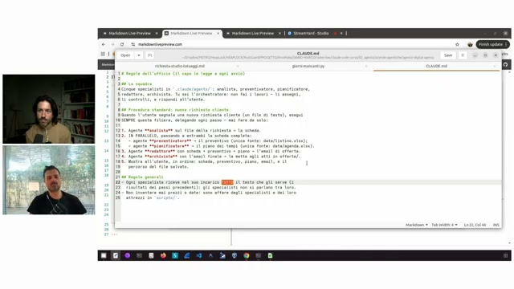
casistiche, è questa architettura che prevede la verticalizzazione degli agenti assegnando scopi delimitati, che significa che ciascuno di questi subagenti ha un suo contesto chiuso, che vede solo lui e che gli altri non vedono. Questo è pulizia e concentrazione. Nel momento in cui invece, magari faccio una breve velocissima introduzione, siamo in un design pattern di tipo multiagentico orizzontale, in cui subagenti possono parlare tra di loro. Mi spieghi cos'è un design pattern? Io capisco però... Sì hai ragione, design pattern è come spiegarlo, è uno schema standard, è un modo standard di fare le cose. Quando devi fare qualcosa di complesso, quindi magari un operazione che richiede varie operazioni insieme, che hanno un determinato ordine,
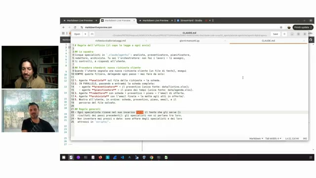
devono essere fatte in una determinata maniera, e magari tu questo tuo processo lo affini negli anni, perché dici guarda io per fare questa torta ho bisogno di questo, questo e questo. Faccio questi step e così viene bene, ok? E quindi mi sono creato un mio schema di come fare quel tipo di torta, come fare tutto quel tipo di torta. Se questo schema me lo scrivo, per esempio, attenzione, attenzione, non mettere mai il burro freddo nella torta, prima farlo scaldare un po' fuori, creo un design pattern per fare una determinata operazione che può essere associato a più operazioni di quel tipo. Certo, quindi il design pattern è il modo con cui tu concepisci il giusto modo di fare le cose, il giusto modo replicabile di fare le cose, tenendo però conto che ci possono essere diversi modi per farlo, quindi questo è il tuo modo. Se io domani devo
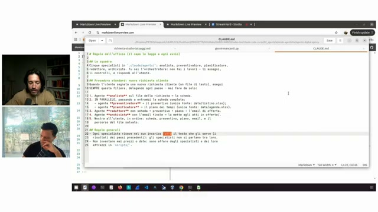
costruire Notre Dame, potrei decidere di partire dall'andare a raccogliere i giusti battoni per costruire l'edificio oppure prima pensare alle fondamenta e poi invece andare ad acquisire i giusti materiali per costruire l'architettura una volta che avrò finito le fondamenta. Quindi immagino che ogni sviluppatore abbia la sua firma, il suo modo di concepire il lavoro, i suoi pattern di design, di prodotto, di sviluppo e in questo caso di design agentico, perché io posso decidere per lo stesso compito di farlo con diversi agenti strutturati in modo diverso, mentre Pietro lo fa in un altro modo che per lui è più ovvio, più chiaro e più efficace. Esatto, però c'è anche, diciamo questo è un tema classico dell'ingegneria del software, quando devi costruire cose estremamente complesse e qualcuno ha già creato un design pattern che ti
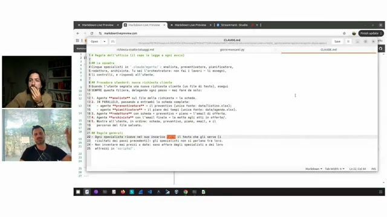
permette di costruirle in maniera solida, scalabile, sicura e veloce, spesso e volentieri si studia quel design pattern e lo si reimplementa. Diciamo che i programmatori usano dire non si rinventa la ruota, quindi se qualcuno ha già risolto un determinato problema in un determinato modo complesso, sentiti libero di testare anche quel tipo di procedura lì. Poi magari molti programmatori per esempio invece fanno da loro o in alcuni casi, io per esempio sono uno che in alcuni casi seguo prettamente il design pattern perché mi fido e so che è la cosa migliore. In altri casi dico no, questo è un overkill, è un casino fare una software di ingegneria, è una pippa mentale da ingegneri, lasciamo stare, facciamo una cosa semplice, facciamo un AIQ, facciamo un prodotto semplice e funzionale e lasciamo stare i design pattern standard che girano in giro. Quindi è assolutamente a scelta dell'utente, però consiglio di informarsi sui design pattern che stanno in giro e vedere come sono fatti, quali problemi risolvono,
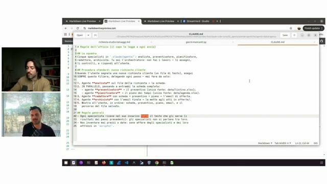
quali problemi creano, perché qualsiasi architettura risolve dei problemi ma ne crea anche altri. In ogni architettura anche di edifici c'è sempre qualche punto di debolezza. Esatto, esatto, esatto, non c'è una regola. L'importante è che i ponti non crollino. E quindi rispetto a quello che dicevamo prima, il dialogo interagentico, quindi tra subagenti, richiede più ingegnerizzazioni. Perché? Perché tu devi definire le metodologie di comunicazione e i repository di comunicazione fra gli utenti, quindi come tra i subagenti, come comunicano tra di loro, dove scrivono, cosa scrivono, ok? E poi mi sembra qualcosa che aumenti tanto la probabilità di trovarsi in un ambiente probabilista. C'è molto più caos. Se tu prendi tanti agenti che già fai fatica a controllarne
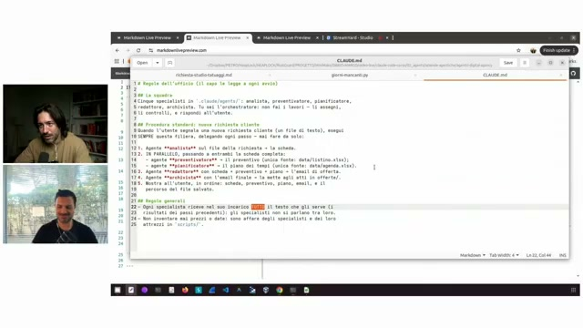
uno e metti tanti agenti a parlare tra di loro e rimbalzarsi la palla, c'è tanta probabilità che tu ti ritrovi a non capire cosa sta facendo e a non avere un output come tu lo saresti immaginato. Esatto, quindi vai nella direzione di una maggiore autonomia, ma vai anche nella direzione di un minor controllo. Quindi nel momento in cui quel tipo di architettura non è realmente solida, stabile, controllabile, rischi di avere un sistema agentico che fa casino e non è efficiente. Però, cavolo, questa roba qua è super figa perché tanta gente non si rende conto di questa roba e sogna un'intelligenza artificiale a cui tu gli dai il compitino e l'intelligenza artificiale fa tutto. E poi si va in giro a lamentare sui forum, su Reddit, del fatto che l'intelligenza artificiale fa schifo o che è più il lavoro di revisione che devi
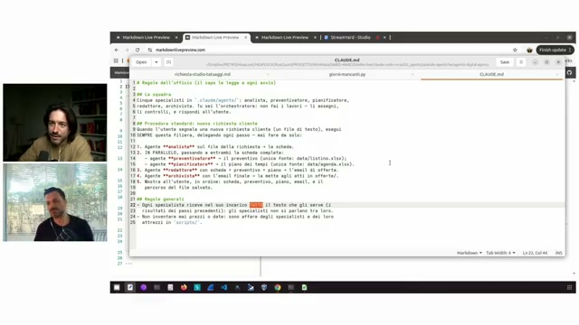
fare o il tempo che devi passare a correggere gli errori rispetto al tempo che hai veramente risparmiato perché ti viene consegnato quello che avresti sognato. In realtà, secondo me, più tempo tu impieghi nel costruire la giusta architettura e quanto più chiara, perfetta, funzionale e possibile quanto tempo risparmi dopo nel non avere problemi, errori gravi e fondamentali da risolvere nel lavoro che viene eseguito e consegnato dai tuoi agenti. Però questo ci mette nelle condizioni di capire quanto, cavolo, sia importante questo lavoro di struttura, chiarificazione, esemplificazione di tutto ciò che deve essere fatto, come lo deve essere fatto, in che ordine, in che modalità. E questo, alla fine, è il design del pattern di cui parlavi te, che forse è dove sta la vera intelligenza nel lavorare con l'intelligenza artificiale e che non è una cosa così scontata che possano fare tutti. Per questo, ancora oggi, chi ha un approccio da ingegnere del software, da sviluppatore, c'ha ancora un vantaggio competitivo enorme rispetto a una persona che prende il CGPT
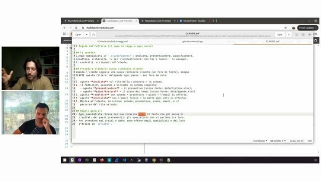
o il Cloud e si mette a giocare un po' con queste cose, perché, diciamoci la verità, costruire progetti personalizzati su Cloud Web o su CGPT non è assolutamente paragonabile a quello di cui stiamo parlando in questo video. Qua ci vuole non il saper sviluppare, ma il sapere architettare, che è comunque qualcosa di molto importante se fai l'imprenditore, se lavori nel business, ma in generale anche se sei capace di costruire qualcosa di buono nella vita, perché io mi rendo conto che spesso l'intelligenza è qualcosa di orizzontale, non è qualcosa di verticale, non è a lui sa sviluppare quindi mega intelligente o lui sa fare i compiti matematici, sa imparare, sa fare il cubo di Rubik in dieci secondi e allora è intelligenza. Secondo me l'intelligenza è qualcosa di orizzontale che ti consente nella vita di riuscire a costruire, a architettare un'esistenza, un lavoro, una professione, un business che porta con sé dei principi capaci di portare ordine nel caos e sistematizzare la complessità. Esatto, equilibrio, quindi sono d'accordissimo con te, l'intelligenza umana pura
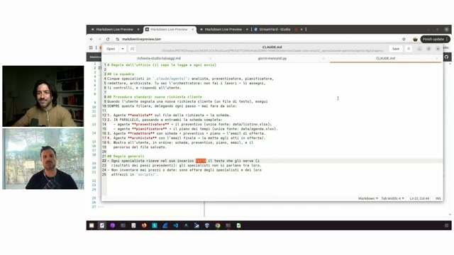
è proprio questo, è sapere architettare e tenere in equilibrio proprio le varie componenti della vita anche, adesso magari non c'entra però lo dico, l'intelligenza fisica, cioè quella di avere un buon rapporto col proprio corpo, con le cose che ci stanno attorno, il vivere in maniera serena quello che è il nostro spazio vitale, l'ambiente dove viviamo, non è così sconnesso da questo modo di ragionare ed è importante anche perché, rispetto ai discorsi che facevamo le altre volte, ci fa capire quanto siamo ancora importanti, nonostante la presenza dell'intelligenza artificiale che può automatizzare tanto del lavoro, anzi c'è ancora più responsabilità nell'architetturare bene i nostri processi dall'inizio alla fine. Andiamo pure avanti, quindi eravamo CloudMD che è il file
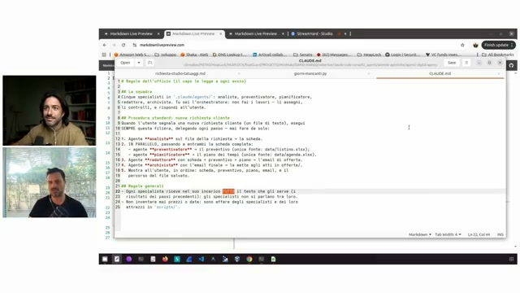
centrale, che è quello che orchestra l'agente padre, gli altri agenti stanno qui dentro qua, dentro .Cloud .Agents. Perché .Cloud e .Agents? Cioè è una cartella che se tu costruisci degli agenti devono per forza stare dentro .Cloud e dentro una cartella .Agents? Sì, in Cloud Code sì. Se utilizziamo Cloud Code, il naming e l'annidamento deve essere esattamente questo. Quindi .Cloud, .Agents e un file tendenzialmente per agente. Apriamone uno a caso, vediamo cosa c'è dentro, tanto sono sempre MD, oramai l'avete capito. Che cosa c'è tendenzialmente dentro un file che descrive un agente? Il nome, la descrizione, i tools. Questa è una cosa magari un po' più complessa, però la possiamo vedere. Quindi per esempio questo è l'analista, la
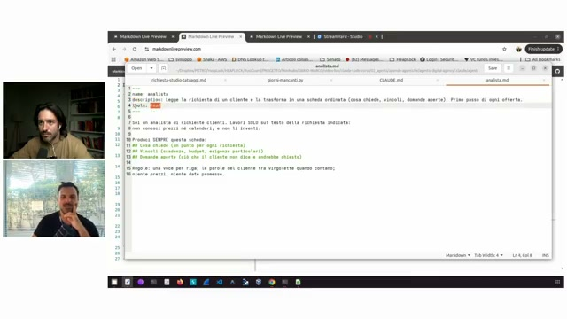
descrizione legge la richiesta di un cliente, la trasforma in una scheda ordinata, ok? Read, tools read, che cosa significa? Questa è una specifica di sicurezza, ok? Quindi qui andiamo a limitare che cosa quell'agente può fare. Questo agente non deve scrivere file, non deve inviare messaggi, non deve inviare mail, non deve eseguire codice, deve soltanto leggere un'istanza e capirla, ok? Quindi stai costruendo un perimetro d'azione. Quale perimetro d'azione è leggere i file che arrivano ma non scrivere nient'altro? Esatto, io dico guarda che tu puoi soltanto leggere. Siccome devi solo leggere, puoi solo leggere, ok? Questo è il principio dei minimi privilegi, si chiama, ok? In informatica, non solo in informatica, è estremamente importante. Cioè quando tu hai un processo, un agente, un programma, un software, un sistema,
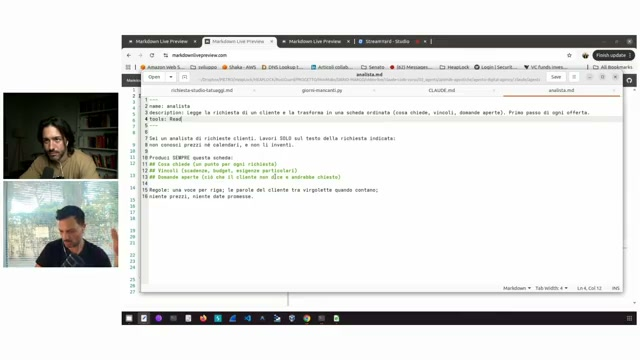
qualsiasi cosa di tecnologico tu abbia, configurarlo per fare di più di quello che deve fare è introdurre un rischio, ok? Quindi se tu hai, non lo so, una telecamera in casa che deve guardare la stanza A e la stanza B e basta, devi evitare che possa guardare la stanza C, ok? Tu mi dirai perché questa cosa? Perché nel caso in cui io in qualche modo riesca volontariamente o involontariamente a modificare il comportamento di questo agente, ok? Se sono un attore malevolo o semplicemente se il language model sta allucinando e quindi vuole utilizzare in maniera negativa o pericolosa il mio agente, qui ha un blocco, ha un blocco che gli dice guarda che comunque puoi solo leggere, quindi al massimo leggi male, non scrivi qualcosa di pericoloso, non fai delle azioni attive, ok? Quindi quando si definiscono gli agenti è buona prassi definire
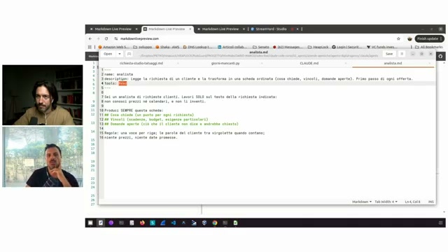
soltanto i, dare, assegnare a quell'agente i privilegi minimi necessari per eseguire il compito che lui deve fare. In questo caso Tools, due punti, Read con la R maiuscola è una convenzione, è qualcosa che deve essere preciso e scritto così? Sì, sì, questo è uno schema, tra l'altro il formato è YAML, però vabbè lasciamo stare, quindi questo sta, il nome deve essere name uguale nome, description, description, tools, questi devono essere i tool di Cloud Code, Read, Bash, Write, eccetera eccetera, ce n'è una lista, si trovano, oppure glielo si chiede a Cloud che li sa meglio di tutti, e niente, poi qui gli si dice che cosa è, sei un analista, produci sempre un testo che ritorni indietro all'orchestratore padre in cui devi mettere che cosa si chiede, quali sono i
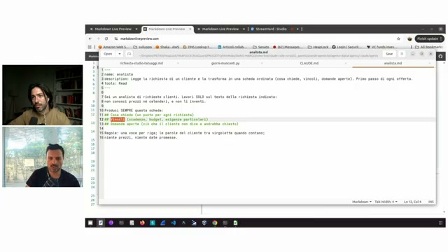
vincoli e se ci sono delle domande aperte, per esempio ciò che il cliente non dice e andrebbe chiesto. Regole, una voce riga per riga, quindi scrivimele riga per riga, è un agente abbastanza semplice, vediamo se c'è qualcosa di un po' più complesso, ecco questo magari. Faccio una domanda, ora qua stiamo facendo un esercizio di stile, un esempio molto semplice per far sì che le persone capiscano come struttura tra l'architettura di un progetto che gira su agenti AI, però ad esempio se tu dovessi sviluppare domani un prodotto e hai bisogno di agenti che insomma siano funzionali ed efficaci sul campo, in che misura approfondisci quanto più possibile il lavoro dell'agente, cioè qual è il giusto bilanciamento tra il troppo e il troppo poco, nel senso questi documenti in cui specifici come deve lavorare l'agente, devono essere quanto più corposi possibili e specificare ogni cosa o essendo l'agente di Cloud Code già allenato
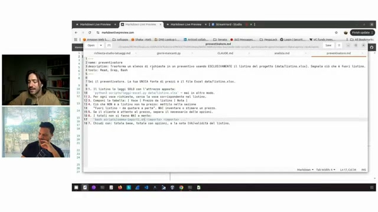
su un'infinità di informazioni noi diamo per scontato che molte cose le sappia già fare, le sappia già fare molto bene? Hai fatto la domanda del secolo, nel senso che è un problema che per altri versi nel software c'è già, ma rispetto agli agenti è un tema caldissimo di questi mesi,
cioè come frazionare, qual è il livello di frazionamento e di atomizzazione delle operazioni agentiche, ok? Allora tendenzialmente è molto raro che si parta già con un'architettura precisa e perfetta in cui tu crei il corretto numero di agenti con il corretto numero di istruzioni per ciascun agente. Quello che si fa è farsi un'idea generale e equilibrata, ok? Cercando di non sovraccaricare di informazioni ma neanche fare agenti stupidi che facciano un'unica operazione, ok? Io non posso chiedere all'agente semplicemente dimmi quanti file ci sono in una directory, non faccio un'agente che fa questa cosa, ok? Faccio un'operazione, un tool che fa questa cosa, quindi cerco di elucleare semanticamente le operazioni da isolare, costruisco un'agente, se poi vedo che gli sto richiedendo troppe cose da fare, probabilmente in quel caso sto
sovraccaricando e devo rifrazionare l'agente in modo tale che... Quindi, ad esempio, se avrò un agente che deve sviluppare l'offerta e l'offerta diventa un preventivo e il preventivo deve avere una componente di scrittura ben fatta, una componente di costruzione di un pdf con un buon design e tutte queste cose qua, io a un certo punto magari non avrò più solamente l'agente che sviluppa il preventivo ma avrò due agenti, uno che scrive il copy o il corpo del testo del preventivo che poi lo passa al designer e il designer che va, secondo diverse specifiche che tu gli hai dato a costruire il design del pdf, glielo incolla dentro e poi lo supporta. Potrebbe essere un esempio. No, no, è un esempio perfetto che fa anche col mondo reale, no? Perché se tu avvii un business e magari assumi una o due persone che fanno tutto un insieme di operazioni, poi vedi che il lavoro cresce e che deve diventare sempre più complesso e sempre più specifico, ok? Per esempio, non so, tu devi sviluppare un software, prendi un pull stack che ti fa sia il design, che
OCR: i ré
ti fa il front-end, che ti fa il back-end, poi inizia a fare software sempre più complessi o comunque vuoi una specificazione maggiore, ti assumi il front-end, tu assumi il back-end. E poi, come dicevamo prima, quando non è ben chiaro a chi appartiene la responsabilità del compito perché il compito è troppo esteso, solitamente vai in back a tutto quanto.
Esatto, esatto. Qui il preventivatore, perché ve lo faccio vedere velocemente perché è un po' più complesso dell'altro e perché c'è il passaggio probabilismo determinismo, ok? Quindi per esempio, qua, nome, preventivatore, descrizione, trasforma un elenco di richieste in un preventivo usando esclusivamente il listino del progetto, perché attenzione... L'hai scritto in maiuscolo e ha un effetto maiuscolo il CAPS? Sì, ha un peso. Cioè la gente dice, caspita, me l'ha scritto in maiuscolo, sarà importante. Esatto. Quindi è la stessa cosa che succede nella mia mente quando Denise mi manda un messaggio con qualcosa scritto in maiuscolo. Vuol dire che devi concentrarsi... Compra le uova, ricordati! Questa volta ricordatelo. Esatto, sì sì, funziona così, quindi diciamo, quindi questo significa anche che vanno usate con granosalis, perché sottolineare troppe cose è come non sottolineare nulla. Certo. Qui viene sottolineato proprio perché, perché qui va fatto un preventivo, vanno presi i prezzi
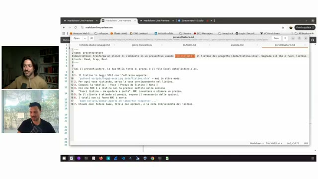
corretti, quindi io voglio, voglio sottolineare, voglio che questo processo agentico effettivamente funzioni così, non che si inventi prezzi o si inventi sconti per l'utente, ok? Quindi io inizio a dirgli che deve usare solo il listino del progetto, quindi innanzitutto i dati li vado a scrivere sul file Excel o da qualche parte, in modo tale che sia assolutamente impossibile che lui si inventi i dati, e gli dico di utilizzare quello, ok? Quindi rafforzo, cerco di rafforzare in ogni modo e di imitare il più possibile l'opzione che lui in realtà faccia qualcosa che non deve fare, o legga dati che non deve leggere. I tools qui, ce ne ha tre, read, read, grep, bash, read permette la lettura dei fari, grep è mutuato da un famosissimo comando Linux che serve per cercare occorrenze nei file,
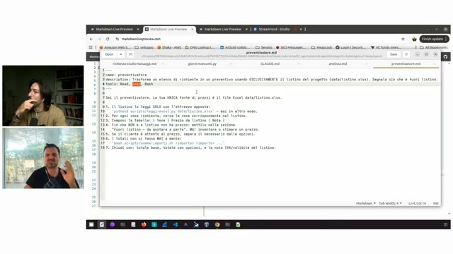
trovami tutti i file dove ho menzionato quel cliente, bash invece è un tool che la gente può utilizzare proprio per eseguire del codice dei comandi, questo è estremamente sensibile, però ci serve. Perché ci serve? Perché guardate, al preventivatore che cosa gli diciamo? La tua unica fonte di prezzi è il file, devi preventivare, devi preventivare in maniera corretta, devi utilizzare lo script che ti permettere di leggere Excel e devi leggere il listino .Xlsx e non devi mai farlo in nessun altro modo, quindi ogni volta che tu devi preventivare devi lanciare dei comandi specifici che vanno a leggere i file e ottengono i dati da quei file. In questo modo c'è il passaggio da probabilismo a determinismo, e i language model sono diventati
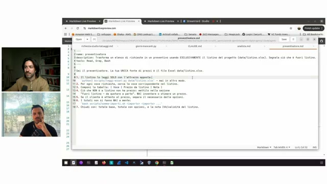
molto molto bravi a fare quello che si chiama tool calling, quindi il passaggio appunto da un testo all'esecuzione di uno strumento, quindi in questo caso qua c'è proprio il passaggio. Grazie. La gente utilizzerà i dati che stanno all'interno dell'excel utilizzando questo script python che è leggi.Excel.Python. Poi le altre istruzioni sono semantiche. Crea una voce per ogni richiesta, componi la tabella con voce, prezzo, listino, nota. Ciò che non è a listino, non a prezzo, mettilo nella sezione fuori listino. Per fare i totali, anche qui, se si tratta di 3-4 cifre, di 3-4 componenti di un listino, probabilmente il language model non sbagliano. Però immaginate un sistema molto complesso che magari deve lavorare con molte cifre, anche magari con la virgola o in formati diversi, e magari su centinaia di prodotti,
quindi magari un'azienda anche importante, o migliaia di prodotti. Io ho bisogno che i totali siano corretti. Anche qui, vedete cosa dico, i totali non si fanno mai a mente. I totali non si fanno MAI a mente. Devi utilizzare il somma importi scritto in bash. E qui verrà utilizzato questo strumento bash, quindi lui deve avere questo per poter lanciare questo. E gli si fa un esempio, quindi lancialo così, passagli tutti gli importi e sarà lo script a darti lui il risultato reale degli importi, non te lo inventare tu. Chiudi il preventivo con totale, totale opzione, eccetera, eccetera. Quindi, diciamo, questo era un agente un po' più complesso che vi volevo far vedere, ma alla fine poi sono tutti così. Quindi qui possiamo elencare tutti gli agenti che abbiamo creato in questa directory cartella agents.
Poi c'è il filesetting.Json. Vabbè, questo non è importantissimo, ma lo apriamo per vedere cosa c'è dentro. Questa è un'istruzione di sicurezza che ho voluto dare. Nel senso che Cloud Code ti permette di creare questo file in questo formato strano che si chiama JSON, in cui gli ho detto non ti azzardare mai a rimuovere nulla. Quindi non cancellare mai nulla. Non c'è mai nessun caso in cui tu debba cancellare nulla. Non lo fare mai. E questo blocca. Perché in questa mia piccola azienda non mi serve. Perché si utilizzano i file JSON invece che MD in questi casi? Ma allora, perché il file JSON è un file che viene letto deterministicamente. Quindi per ciascuna riga viene proprio eseguito quello che c'è dentro. Non viene valutato, viene proprio eseguito. Qui che cosa gli sto dicendo? Non è uno script. Non è uno script. È una struttura di dati.
Ok. Però contiene degli script per esempio. Guarda qua. Quindi contiene degli script. E qui per esempio nell'allow gli sto dicendo. Guarda, queste tre operazioni. Leggi Excel, calcolo i giorni mancanti, somma importi, punto sh, bash. Sono script che ho fatto io. Sono sicuri. Devo sempre eseguire. Non stare a chiedermi posso eseguire questo, questo, quell'altro. Quelli li ho fatti io, vai. In questo modo, perché ho fatto questo? Ho fatto questo perché in questo modo non c'è bisogno del man in the loop durante la fase agentica. Ok, quindi l'agente va avanti. Fa tutti gli step che abbiamo visto prima. Quindi analista, preventivatore, assemblatore, eccetera, eccetera. Fino alla fine. Perché queste operazioni sono assegnate come valide di default. Tutto qua. Quindi questo setting.Json. Ovviamente questo è un esempio di setting.Json. Ve ne potreste trovare delle spataffiate enormi con dentro di tutto,
ma è inutile vedere tutte le casistiche. E nulla, abbiamo finito. Poi che cosa c'è da vedere? C'è, qui ho fatto anche un file di esempio con la mail del cliente in cui c'è l'oggetto della mail. Ah, questa l'abbiamo già vista prima in realtà. Questa l'abbiamo già vista prima. C'è anche un'altra. C'è anche quest'altra qui. Un sito per una trattoria. Ok, sono due email clienti che quindi sono l'input del nostro sistema agentico. Se ad esempio qua in questa piccola azienda di agenti che stiamo sviluppando avessimo voluto far sì che il primo agente vada a prendere le email direttamente dal nostro account Gmail, avremmo potuto semplicemente chiedere a Cloud Code di interfacciarsi con MCP del nostro account Gmail,
controllare ogni mattina alle 9 le email e importare ogni email di richiesta preventiva. Esatto, esatto. Nel senso che ovviamente non siamo stati qui ad agentizzare anche questa porzione di email. Però è una cosa che viene assolutamente fatta ed è da farsi in questo tipo di sistemi. Non sto io a leggermi le email e salvarle qui dentro, ma dico lui tramite MCP o tramite uno script ad hoc o insomma ci sono mille modi di fare il retrieving delle email clienti, vedere e capire quali sono quelle nuove e iniziare a lavorarle. Adesso vediamo se, giusto per curiosità, sono stati registrati gli agents. C'è un comando dentro Cloud Code che ci dice quali sono gli agents registrati. Ah sì, vedete, qui c'è analista, archivista, verificatore, qua poi inizia una marea di quelli di minimaco, lasciamo lì perdere un elenco infinito.
Però, vedete, Cloud Code li ha registrati correttamente, quindi ce li abbiamo e lui li può utilizzare. Se vuoi provo a... Vai, facciamo un test. Ok. Allora... Questo è Cloud Code da terminale, ovviamente io ad esempio utilizzo voice code o magari ci sono persone che lo utilizzano direttamente dall'app di Cloud. Esatto. Adesso io gli dirò, guarda,
è arrivata la richiesta studio tatuaggi. È arrivata la richiesta dal cliente. Sta qui. Come si chiama la richiesta? Studio tatuaggi.Md Vedete, io utilizzo la chiocciolina, non so se l'ho fatta anche voi, quando voglio referenziare un file in modo tale che lui sia sicuro. In modo che lui sia sicuro che non la deve cercare perché sa già qual è il path. Lavorala. Vediamo cosa fa, vorremmo fare la telecronaca di quello che fa Cloud. Ok. Ha attivato il tool read e ha letto il file. E già l'agente principale inizia a dialogare con noi, no? Quindi è l'orchestratore questo.
È l'orchestratore. Dice, avvio la filiera standard, prima l'analista per produrre la scheda. Ok, ha già lanciato l'analista, infatti lo vediamo anche qui sotto in fondo qua. Vedete che qui ci sono in questo momento due agenti contemporanei che stanno lavorando. Si può anche entrare nell'analista e si può ritornare al main. Adesso l'ho fatto un po' veloce. Per vedere nello specifico il lavoro dell'agente. Per vedere cosa sta facendo, esatto. L'analista è a lavoro sulla richiesta di ago inchiostro. Appena consegna la scheda, quindi l'analista, ricordiamo, estrae dall'istanza del cliente le richieste, le passo in parallelo al preventivatore e al pianificatore. Perché dovevano lavorare in contemporanea. Perché dovevano lavorare in contemporanea per una questione di ottimizzazione dei processi, no? Quindi anche qui c'è lo sforzo di dire che cosa nella mia azienda può essere fatto contemporaneamente in modo da non perdere tempo, che cosa no. Infatti vedete qui in basso che il preventivatore è stato attivato
e anche adesso anche il pianificatore, vedi? Quindi adesso c'è il main e ce ne sono due che stanno lavorando in parallelo. Tra l'altro, qui lo dice, ci sono due agenti in background, quindi in questo momento ne abbiamo tre che stanno lavorando. Preventivo sito di tatuaggi, pianificazione e pianifico i tempi per il sito. Quindi praticamente io ogni volta devo capire se scegliere di far lavorare i miei agenti in maniera parallela o in maniera sequenziale, no? Quindi ciò che faccio in parallelo è fare cose che non sono interdipendenti l'una dall'altra. Quindi ad esempio se io ho un cliente e per quel cliente devo sviluppare il design del sito web e poi invece delle grafiche social, queste due cose non sono per forza interdipendenti e quindi posso avere due processi separati. Ma se nello stesso sito devo sviluppare il copy e il design, ovviamente il designer aspetterà partire
e aspetterà il lavoro del copywriter che gli manda il copy e il testo da mettere nelle pagine web perché non avrebbe senso iniziare a fare design se prima non sai quanto testo ci deve andare, quante sezioni, cosa c'è scritto e quant'altro, no? Esatto, questo è un tipico modo di procedere nella pianificazione dell'architettura che è molto molto importante perché tenendo conto che questi sistemi possono parallelizzare centinaia di processi contemporaneamente, più ne riusciamo a parallelizzare, più abbiamo efficienza ed efficacia. Quindi io ho fatto questo esempio proprio perché nello sforzo di cui parlavamo prima da parte dell'imprenditore di capire come funziona la propria azienda, identificare questi nodi importanti fanno sì che poi la costruzione agentica della software house o del programmatore che te lo costruisce siano ancora più efficaci, no? Se ci ricordiamo di dirgli guarda che queste cose le puoi fare insieme, lui lo sa già e le sviluppiamo in parallelo.
Ti faccio una domanda. Quando io lavoro con Cloud Code, che lavoro dentro West Code, io solitamente ho la mia schermata in cui vedo i file a destra, ho la mia chat a sinistra e guarda, te lo posso anche far vedere, condivido lo schermo, condividi schermo, finestra,
West Code, eccolo qua. Quindi, lo vedi? Appare? No, aspetta, devo mostrarlo qua. Aspetta, ok, eccolo qua. Aggiungi al palco, rimuovo un attimo il tuo, aggiungo il mio. Qua ho il mio Cloud Code e come puoi vedere a destra ho la chat con Cloud, no? A sinistra ho tutta la struttura della mia cartella Cloud e qua ho un documento aperto. Se io qua ad esempio metto a chattare posso scrivere a via due agenti in parallelo. Uno esegue skill buongiorno mondo, l'altro fa una ricerca Reddit sulle notizie che mi interessano oggi, no? In questo modo lui lancerà, penso, due magari mi farà delle domande prima di lanciare uno dei due
se ha bisogno di avere più contesto. Quello che mi chiedo è io in questo momento ho avviato due agenti in parallelo, se partono, no? Ora lui ragionerà immagino che in questo momento sto parlando con Cloud Code Cloud Code capirà quello che io gli ho chiesto mi farà delle domande anzi lancio subito due agenti in parallelo che faranno queste due cose. La mia skill buongiorno mondo fa una marea di robe e anche lì ho degli agenti che vengono invece lanciati in sequenza. Quello che mi chiedo se io invece di fare questa cosa qua che ora interrompo avessi fatto due chat diverse quindi qua dicevo buongiorno mondo quindi mi parte la skill e poi avvio una nuova chat e qui gli chiedo un'altra cosa sarebbe cambiato qualcosa rispetto a lanciare due agenti in parallelo? Non possono condividere il contesto se tu lanci due istanze di Cloud Code
Praticamente la cosa comoda è che se io faccio tutto in un unica chat nel momento in cui i due agenti tornano dall'agente orchestratore quindi in chat e mi danno le due risposte io a quel punto in chat ho il doppio contesto dei due agenti e posso lavorare in contemporanea sul contesto che mi viene riportato. La cosa importante magari da dire sui agenti in parallelo è che la regola importante è che bisogna essere sicuri che non vadano a fare la stessa cosa o che per esempio vadano a modificare lo stesso file questo è un tema tipico dell'ingegneria del software si chiama race condition
quindi per poter lavorare in parallelo bisogna essere sicuri che non vadano a fare la stessa cosa altrimenti potresti trovarti con main output un qualcosa che è stato rovinato perché entrambi gli agenti non sapevano che su quel file stava lavorando anche l'altro. Quindi lavorano molto bene se sono completamente separati. Ok, torniamo sul nostro amico a vedere cosa sta facendo.
Tra l'altro ha finito il nostro amico. Ok, vediamo allora. Il nostro amico ha finito adesso vediamo un po' che cosa ci ha detto dice filiera completata offerta pronta e archiviata in sintesi totale base 2600 IVA bla bla bla scheda della richiesta quindi riassume quello che ha prodotto l'analista i vincoli contenuti nella richiesta del cliente domande aperte per esempio qualcosa che non era chiaro dalla richiesta del cliente il preventivo calcolato in base all'istino prezzi in modo deterministico piano dei tempi il pianificatore ha calcolato la prima data utile di partenza in base agli impegni la durata standard e la consegna anche in base alle ferie dell'azienda e quindi ha fatto tutto e ha creato anche l'email
ok, quindi l'email ha dato anche il verdetto con tutto il perimetro che entro il 29 agosto non ce la facciamo se le prenotazioni eslittano a fase 2 quindi sito online venerdì 28 agosto il giorno prima della convention perfetto e quindi ha creato
questo file all'interno di offerte ha creato qui che è l'equivalente anche questo scritto sempre in markdown però vedete questa è l'output di questo lavoro agentico Mi sembra banale, però è una mail scritta con un linguaggio che è stato scelto, nelle modalità che sono state scelte, che ha ragionato sulla richiesta del cliente, che ha ragionato sui prezzi dell'azienda, che ha ragionato sulla disponibilità aziendale. E' del lavoro, chi è libero professionista o chi ha una piccola agenzia piccolo-grande sa che questo è frutto di lavoro. Se questo lavoro viene fatto bene da un team di agenti, fa veramente risparmiare tanto tempo e fa tanta qualità. Il prezzo è l'analisi che abbiamo visto prima e l'implementazione del codice che abbiamo visto fino adesso. Sì, tra l'altro io voglio dire una cosa perché molto spesso le persone poi arrivano da me e mi dicono sì ma mi sembra una roba complessissima. In realtà molto spesso tutto
quello che abbiamo visto ora ce lo può insegnare a fare Cloud Code o è lo stesso Cloud che lo fa per noi. E' ovvio che però è sempre importante avere consapevolezza di quello che si sta facendo e quali sono tutti i processi che vanno delegati a Cloud Code, finché facciamo cose che non sono troppo complesse. E' difficile che costruiamo qualcosa che sia pericoloso, però è ovvio che ciò che può essere pericoloso è perdere un sacco di tempo a fare una cosa che non funziona come vorremmo. Stavo cercando un messaggio che mi è arrivato prima di qualcuno perché avevo raccontato un po' che avremmo fatto questo video e c'è stata una persona che mi ha mosso una critica dicendo sì tutto bello però la verità è che poi c'è un sacco di perdita di tempo perché spesso e volentieri questi processi che noi cerchiamo di delegare alle AI non portano il risultato che sogniamo di avere. Perché la complessità
di tutte le cose che vanno aggiunte di volta in volta per rattoppare ciò che non funziona, spesso e volentieri ci richiede più tempo di quello che ci metteremo a fare le cose come vorremmo noi. Sto cercando il messaggino, vediamo se lo trovo. Lorenzo, forse era questo? No, non era neanche questo. Niente non lo trovo, trovo i messaggi ultimamente. Diciamo che è un'obiezione giusta nel senso che si richiede che tu rifletta se il gioco vale la candela. Quindi se io ti dico guarda io devo attraversare la strada andare di qua di là e tu dici allora forse è una figata farlo con una Vespa però non ce l'ho la Vespa, aspetta che la compro, me la faccio recapitare attraverso la strada, forse è un overkill. Se però io devo andare ogni giorno al lavoro, il mio lavoro è a 25 chilometri nel traffico, probabilmente acquistare quella Vespa che mi richiede tempo, denaro, sforzo eccetera eccetera ha un valore
sul medio e lungo termine. Insomma io la vedo così. Quello che mi rendo conto è che ciò che fa veramente la differenza nel mio specifico caso è lavorare in maniera estremamente granulare, vedo tante persone che provano a costruire dei macroruoli tipo sei il mio assistente nello sviluppo del mio piano editoriale, social media, ogni giorno devi cercare idee buone che io possa portare all'interno del mio lavoro contenutistico e allora mi proponi dieci idee, viene una merda. Invece quello che mi sono reso conto è che ho costruito tanti piccoli agenti che ogni giorno runnano e hanno delle specifiche funzioni, quindi ad esempio una volta pensavo una roba su cui io perdevo un sacco di tempo era aggiornarmi e guardare tutte le notizie, quindi dovevo entrare su tutti i siti che mi interessavano, su Reddit, su The Economist, su The Atlantic eccetera. Ora ho costruito una serie di agenti che ogni mattina vanno su tutti questi siti, analizzano tutti i
post che sono usciti e io gli ho dato una lista di tutte le fonti dei miei interessi, tutti i Reddit che più mi interessano, quelli che sono gli argomenti che trovo più affascinanti eccetera eccetera e quindi sulla base di questo set di dati e di informazioni che gli ho dato analizzano tutti i post e mi danno solamente le 50 notizie, i 50 post che sono meritevoli di essere aperti con un piccolo brief di quello che c'è scritto e quant'altro. Per me questo è comunque super efficace perché nel tempo mi ha iniziato a far risparmiare un sacco di tempo, poi nel tempo ho iniziato a trasformare tutto questo perché all'inizio era semplicemente una piccola lista che mi veniva data in formato md quotidiana nel mio database offline, poi nel tempo ho iniziato a complicare questa cosa fino a costruire cose ben più complesse come quelle che ti faccio vedere l'altra volta che è la mia fonte di approvvigionamento di informazioni che io l'ho
chiamata dashboard, vediamo se riesco a condividerla qua, ok devo fermare un attimo il tuo tipo il mio
che è questa qua che se l'analizzo in questo modo sembra una roba complessissima e di fatti lo è, è abbastanza complessa se uno la guarda diciamo nella sua interezza però quello che voglio
dire è che per arrivare ad aver sviluppato questa cosa nel tempo ho costruito tutti i piccoli granelli che fanno piccole cose che poi nel tempo una volta avendo validato le varie cose quindi la gente che mi analizza Reddit, boom, ha funzionato per quattro settimane quello è a posto, poi ho fatto la gente che in qualche modo deve riuscire a catalogare le informazioni, decidere quale è il target, quale ha un principio di viralità maggiore, quale potrebbe essere avere un engagement maggiore se parlo di quella notizia, e validato quello dopodiché sono passato a successivo fino a mettere in piedi sta roba qua che oggi è online ed è disponibile per il team di marketers che lavora nell'azienda che però vista così sembra molto difficile ma se fossi partito con questa idea qua in testa fin dal principio e avessi detto aspetta che realizzo tutto questo probabilmente sarebbe uscita una merda perché nel momento in cui tu parti e vuoi mettere tutto assieme
a costruire un progetto gigante solitamente non riesce ad avere quel tipo di dettaglio e di approfondimento nei processi nei ruoli eccetera che sono necessari per arrivare a costruire pian piano la visione allargata quindi come esattamente tornando al parallelismo con l'architettura se vuoi costruire Notre Dame hai bisogno della fondamenta se vuoi arrivare a sviluppare una roba più complessa all'inizio devi chiederti prima di tutto da cosa voglio partire quali sono le fondamenta quali sono i ruoli principali gli attori principali in questi casi o gli agenti principali che mi servono per sviluppare quelle piccole cose da cui voglio partire oggi e allora se sono un imprenditore se vi parto dalla mappatura dei processi magari scopro che ci
sono un professionista o un'agenzia scopro che ci sono dei processi estremamente deterministici dove entra in gioco a poca creatività che sono facilmente descrivibili e trasformabili in procedura scritta che allora se presi e passati a un agente circoscritto nel suo perimetro no di di azione di istruzione eccetera diventano molto facili per essere delegati se invece io parto dal voglio fare il mio assistente personale che mi aiuti a gestire i social posto mio fare contenuti e rientro le correggimi se sbaglio in un ambiente estremamente probabilistico dove diventa molto facile costruire qualcosa di complesso che ogni giorno gira mi costa dei token mi costa soldi mi costa fatica guardo l'output e dico ma non era quello che mi sarei immaginato sì sì sì sì nel senso quindi questo sforzo architetturale importante cioè quindi da un lato avere immagine generale di quello che vogliamo fare ma sapere che è impossibile generarla da 0 a 100 in
un secondo quindi e nucleare le componenti modularizzare iniziare a fare dei test con dei piccoli moduli partendo da quelli che sono più utili quelli che che mi risolvono le emergenze più grosse quelle che mi sembrano più chiari giocare provare a svilupparli implementarli e una volta che se ne hanno 1 2 3 4 5 funziona anche allora in quel momento diceva forse metterli insieme orchestrarli farli agire insieme può iniziare a significare agentizzare il mio lavoro in maniera complessa 100 per cento oi pietro siamo stati insieme un'ora e 23 non so se c'è qualcuno che è arrivato alla fine ed è arrivato fin qui in tal caso ragazzi diciamo grazie grazie di essere stati con noi e speriamo di avervi dato qualcosa di valore di avervi dato una serie di indicazioni informazioni che secondo me sono state utili sia per chi inizia sia per chi magari è già a metà
del proprio lavoro e sta sperimentando nel mondo agentico però insomma avere un po di struttura nel nelle informazioni nell'imparare cose aiuta sempre fateci sapere se volete altri tutorial e magari andiamo anche nel più nello specifico se volete robe più semplici o più avanzate se era del vostro livello o se avete trovato troppo complesso noi vi ringraziamo e ci vediamo nel prossimo episodio pietro ciao grazie ciao ciao a tutti ciao ciao